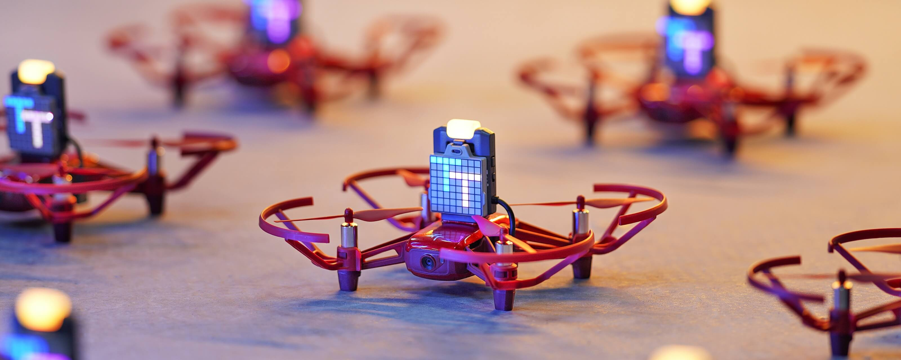
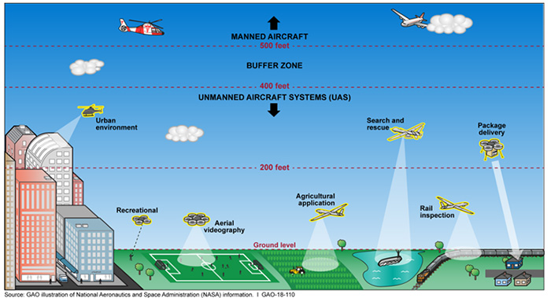
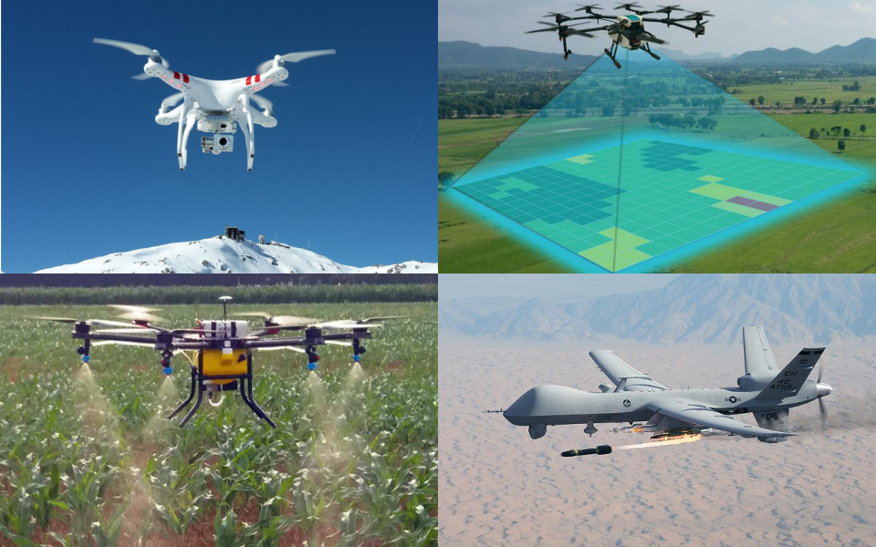
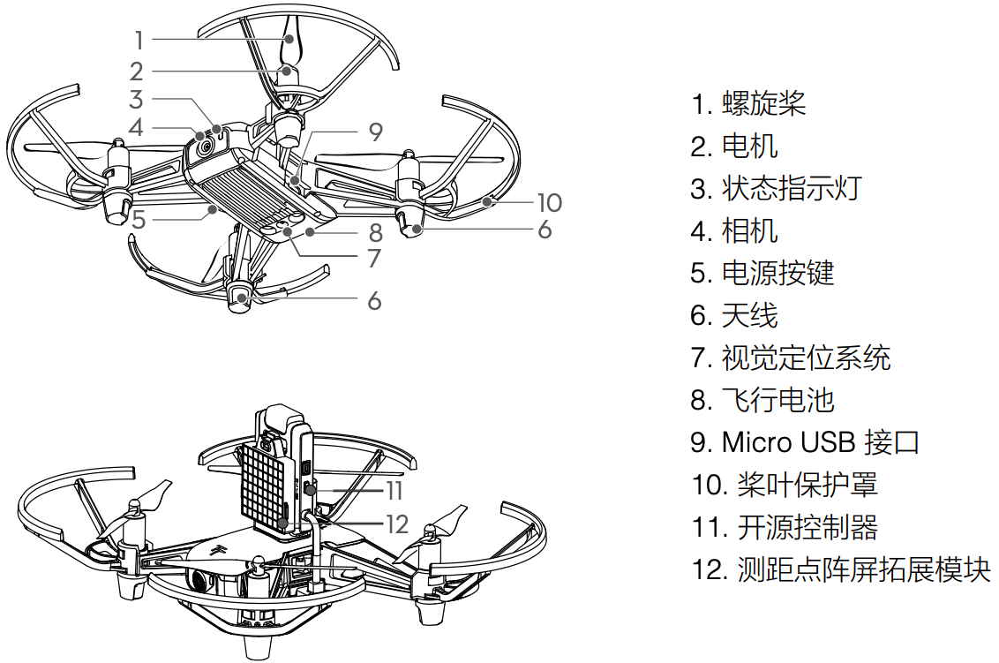
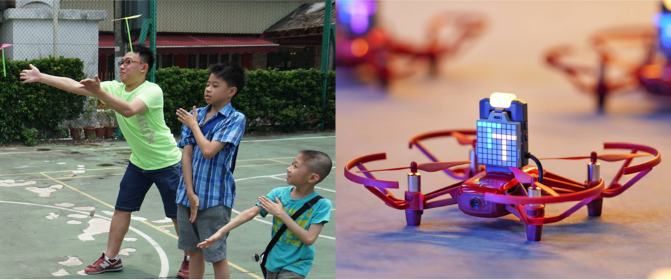
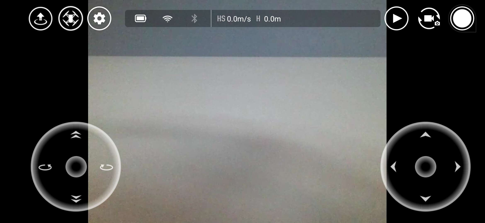

第 1 课 飞行学校 - 你好，TT 无人机！
（Tello Talent 特洛创造力）

schedule60 分钟
stars初级（Beginner）
face3-6 年级
一. 什么是无人机？
一. 什么是无人机？（What is UAV?）
- 【无人机】Unmanned Aerial Vehicle，不需要驾驶员登机驾驶的飞行器。
- 【历史】源于军事需求，最早开发是在一战后（1918年），二战中作为无人靶机用于训练防空炮手，二战后用于侦察、武装作战等，现广泛用于商业应用。
二. 为什么需要无人机？（Why）
二. 为什么需要无人机？（Why）
- 【Why】替代人类执行危险的、无法完成的任务。
- 【特点】体积小、造价低、使用方便。
- 【军事应用】侦察、武装作战、训练等。
- 【商业应用】空中摄影、地理测绘、农业植保、物流运输、安防救援等。
三. 为什么要学习无人机？
三. 为什么要学习无人机？
- 【激发孩子对科技的兴趣】兴趣是最好的老师。
- 【人工智能时代的需求】在未来充满机器人、AI 的世界里，熟知科技技能让孩子更从容。
- 【提升孩子的逻辑思维能力】增强孩子做事的条理性；增强孩子的推理与判断、比较与分析、抽象与概括、归纳与演绎的能力。
- 【提升孩子的创造力】宽广的眼界，有助于提升孩子的创造力。
- 【提升孩子的解决问题的能力】基于项目的“做中学”教学方法，孩子只有解决项目中碰到的问题，才能完成项目
四. 认识 TT 无人机（Tello Talent）

五. 无人机原理
五. 无人机原理
- 【竹蜻蜓】当「手的搓动」给了竹蜻蜓一个旋转的速度后就会产生升力，让竹蜻蜓起飞。
- 【无人机】当「电机的旋转」给了「螺旋桨」一个旋转的速度后就会产生升力，让无人机起飞。当无人机四个螺旋桨的升力之和等于无人机总重量时，无人机的升力与重力相平衡，无人机就可以悬停在空中了。调节无人机四个螺旋桨的转速，便可使无人上下左右前后移动。
六. TT 无人机基本操作

- 【准备遥控器】即「手机 + Tello App」，打开 Tello App。
- 【准备 TT 无人机】按一下电源按键，开启 TT，黄色指示灯会闪烁。
- 【连接遥控器和 TT】在 Tello App 上点击「连接」按钮，选择 Tello-xxxx 无线名，指示灯黄色慢闪且 App 中出现视频画面则表示连接成功。
- 【起飞】点击左上角「起飞」按键，TT 会自动起飞并悬停在空中。
- 【降落】点击左上角「降落」按键，TT 会自动降落到地面。
- 【移动】点击上下、左右、前后、平移等按钮，TT 会按指示移动。
七. 拓展练习：弹跳飞行

- 【起飞】让 TT 悬停在空中。
- 【运行弹跳模式】点击左上角「模式选择」按钮，选择「弹跳模式」，TT 自动在离起飞平面 0.5m 至 1.2m 之间上下弹跳。在感应到下方有物体时（如将手掌置于 TT 下方），TT 将上升小段高度并继续弹跳。。
- 【关闭弹跳模式】点击左上角「关闭」按钮，停止执行「弹跳模式」。